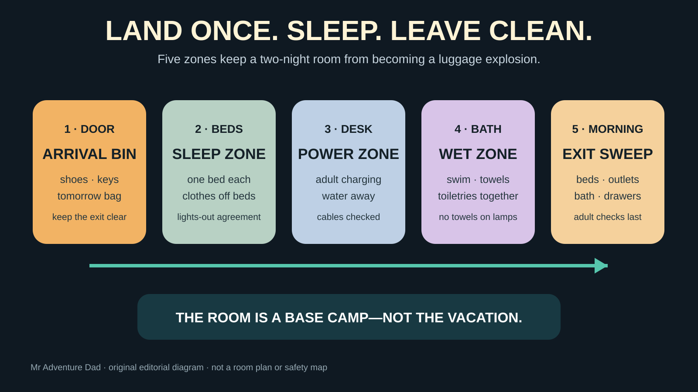

DAD SYSTEM · TWO-NIGHT BASE CAMP
The Family Hotel Room System: Sleep, Gear, and a Fast Morning Exit
A hotel room does not need to feel like home. It needs four people to sleep, find tomorrow's clothes, charge the essential phone, and leave without checking the same drawer three times.

Who this system fits—and who should change the lodging
Good fit: a family of four using a standard room for one to three nights, especially on a trip where the days matter more than the property. Choose a different room or lodging type: anyone whose sleep depends on a closed bedroom, families with a child who cannot safely share the open room, groups exceeding the property's occupancy limit, travelers who need a kitchen or verified accessibility feature, or adults who plan to stay awake with lights and television after children need darkness.
This system supports the site's family getaway picker. It does not tell you which city wins. It keeps the room from becoming the least enjoyable part of whichever trip your family chooses.
Book the sleeping problem—not the room label
“Sleeps four” is not a bed diagram. It may mean two queens, one king plus a sofa bed, a double plus a rollaway, or a room whose listed maximum assumes sharing your family will not tolerate. Before paying, verify the number and type of beds, whether the sofa actually opens, occupancy limits, whether a crib or rollaway is permitted, and whether the requested setup is guaranteed or only noted.
For two school-age children, two real beds are the simplest default when the room and budget support it. A suite earns the extra cost when the separate door materially improves sleep, not because extra square footage sounds luxurious. Connecting rooms can solve privacy but add door management and may not be guaranteed. Never book children into a separate nonconnecting room because a search result displayed two rooms together.
Compare the total that reaches checkout
The Federal Trade Commission's fees rule for short-term lodging took effect May 12, 2025. Covered sellers must display the total price including mandatory fees more prominently than most other pricing information. That improves comparison, but taxes, optional charges, parking, breakfast, pet fees, deposits and cancellation terms still need a deliberate check. Save the final rate breakdown and cancellation deadline rather than relying on the first nightly number.
- Parking: on-site, off-site, valet-only, height limits, in-and-out privileges and overnight cost.
- Breakfast: included for every registered guest, discounted, or simply available for purchase.
- Pool: actual operating hours, closure status, depth, supervision rules and whether reservations are used.
- Deposit and incidentals: amount, accepted payment method and expected release timing.
- Cancellation: the hotel's local time zone, exact deadline and whether the rate is prepaid or nonrefundable.
Booking facts are volatile. Confirm directly with the property when a bed type, pool, accessible feature, late arrival or parking arrangement would make or break the weekend.
Before luggage touches a bed: the sixty-second room check
One adult enters first while everyone else keeps bags zipped and off beds and upholstered furniture. Confirm the room matches the reservation, the door latches, smoke alarms appear present, paths and outlets are not visibly damaged, and the bathroom is usable. Report a problem instead of improvising around it.
The Environmental Protection Agency advises travelers to inspect hotel rooms for signs of bed bugs, including the mattress and headboard, and to inspect the luggage rack before using it. A flashlight can help. This is a calm check, not a reason to dismantle furniture or spray pesticides. If you see a suspected pest or evidence, keep belongings contained, photograph what you can without spreading items, and contact the property.
Use the luggage rack only after inspection. Keep bags closed, off beds and away from the sleeping area. The goal is risk reduction, not a guarantee that no room can ever have a pest.
The five-zone room setup

1. Door zone: one arrival bin and tomorrow's bag
Put shoes, keys, parking ticket and the next day's small outing bag in one visible place that does not obstruct the exit. Do not build a suitcase wall between the beds and the door. The road-trip packing system works because the overnight bag enters while bulk luggage can stay organized.
2. Sleep zone: beds stay available for sleeping
Assign sleeping positions before children start negotiating at bedtime. Put pajamas and the next morning's clothes together; everything else stays in a suitcase or one drawer. Set the thermostat and lights before anyone is overtired. Agree on one quiet activity and one lights-out time. If one adult needs to stay awake, headphones and a dim screen are less disruptive than room television.
Do not clip blankets, towels or makeshift curtains to lamps, sprinklers, smoke alarms or heating equipment. If light is a serious problem, use the installed curtains as intended or request a different room. A familiar sleep routine from the family sleep-system guide transfers better than carrying half a bedroom.
3. Power zone: one adult-controlled charging surface
Choose one dry, stable surface for phones and watches. Inspect outlets and furniture-mounted ports before use; if anything is loose, scorched, hot or unreliable, stop and tell the property. Keep drinks away. Run cords where nobody will trip, snag them with bedding or block an exit.
Charge the navigation phone first. The family phone-power guide explains why a known-good car charger or modest bank can be more useful than fighting for every bedside outlet. Do not leave a damaged or recalled lithium battery charging unattended.
4. Wet zone: bathroom owns swim and cleanup gear
Swimsuits, towels and toiletries stay together. Use only the hooks, racks and drying locations the room provides safely; do not hang wet fabric on lamps, heaters, sprinklers or doors needed for escape. Put a dry change of clothes outside the splash zone before children enter the pool.
Pool time should have a stopping point. “One last swim” at 9:30 p.m. can erase the sleep the hotel was supposed to provide. Set the exit time before the kids get wet, rinse, change, eat a small planned snack, then lower the room.
5. Morning zone: pack before breakfast earns attention
Each person puts sleep clothes, chargers and bathroom items into the assigned bag before breakfast. Leave one small day bag accessible. An adult completes the final sweep: beds and under-beds, outlets, nightstand, bathroom, drawers, closet, refrigerator and safe. Check the room, then the hallway side of the door after everyone exits.
The first-night sequence that protects the second day
- Park and confirm: know the legal overnight spot, elevator or stairs, and how the family will reach the car in the morning.
- Room check: one adult checks the room before bags spread.
- Land the five zones: ten focused minutes; no full suitcase dump.
- Eat before the crash: use a planned meal, simple carry-in or known nearby option. Do not ask four hungry people to browse menus indefinitely.
- One short hotel feature: pool, lobby game or walk—only if it helps, not because it was included.
- Reset: showers, tomorrow's clothes, phones charging, alarms set, lights down.
Food and the tiny refrigerator problem
Do not assume a room has a refrigerator, freezer compartment, microwave, dishes or safe food-storage capacity. Confirm amenities. A “beverage cooler” may not be intended to hold perishable food at refrigerator temperature. If you bring perishables, use the temperature principles in the family cooler guide and discard food that was not kept safely cold.
A two-night room needs less food than parents often carry: water, a reliable bedtime snack, a simple breakfast fallback and whatever medical or dietary need cannot be left to chance. Keep food closed, clean crumbs promptly and follow property rules. The hotel should not look like a weeklong apartment after one evening.
Fire and evacuation: two minutes, once
The U.S. Fire Administration advises choosing hotels with hard-wired smoke alarms and automatic sprinklers in each guest room, reading the evacuation plan, finding the two nearest exits, counting the doors between the room and exits, and locating the alarm pulls. Walk the nearer exit once with the kids while everyone is awake. Explain that elevators are not the default during a fire unless emergency officials direct otherwise.
Keep the door path clear and shoes, room key and essential medication reachable. Do not disable alarms or prop fire doors. If an alarm sounds, act on it. The family does not need a frightening lecture—just one simple instruction: shoes if immediately reachable, follow the adult, use the stairs, meet at the named outside point.
Kid-meltdown and sleep backups
Room is smaller than expected: reduce belongings, not expectations; keep one suitcase open and the others closed. Sofa bed fails: contact the desk immediately; do not create an unsafe sleep surface from cushions. Neighbors are loud: ask the desk for help or a room move if available, then use the family's ordinary quiet routine. Pool is closed: it was a hotel feature, not the vacation; take a short walk, play a compact game or start bedtime early.
Child cannot settle: one adult uses the hallway or lobby only if the child remains supervised and property rules allow it; the other protects the room's quiet. Everyone wakes early: dress, pack and take breakfast out. Do not force two extra hours in a room that has finished its job.
The two-night packing rule
- One overnight bag for shared sleep and bathroom gear.
- One small day bag that can leave without repacking the room.
- One complete outfit per person grouped together, plus the trip-specific spare that solves a real problem.
- One charging pouch controlled by an adult.
- Required medication in the adult's consistent location, never buried in luggage.
- Swim gear only if the pool is confirmed and the family genuinely plans to use it.
- A laundry bag for wet or dirty items so clean clothes remain clean.
Who should skip the standard-room bargain
Skip it when bad sleep will ruin the only full trip day, when a family member needs verified accessible circulation or bathing features, when occupancy or bed rules do not fit, when food needs require a real kitchen, or when remote work and children's bedtime must happen simultaneously. Paying less for a room the family cannot use is not thrift. It is buying friction.
Official sources and check date
Federal pricing, fire-safety and bed-bug guidance was checked August 30, 2026. Property amenities, policies, prices, deposits and room layouts remain hotel-specific and can change.
- Federal Trade Commission: fees rule effective May 12, 2025
- FTC: lodging total-price rule questions
- U.S. Fire Administration: hotel and vacation-rental fire safety
- U.S. Environmental Protection Agency: bed-bug tips for travel
MAKE THE WEEKEND COUNT
The room is allowed to be boring.
Use it to recover, reset and get the family back into the trip.
Choose the next family plan